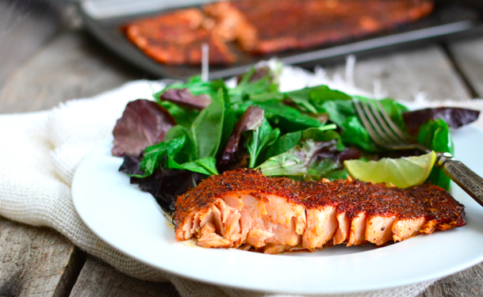
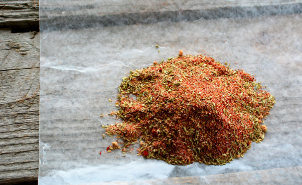
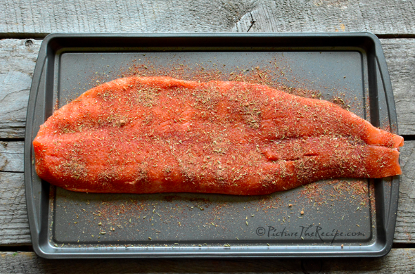
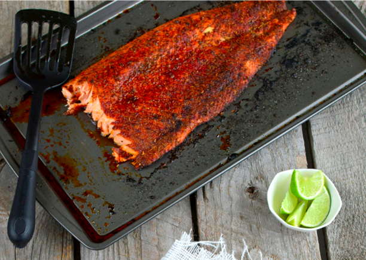

|

Ingredients: Salmon fillet, Olive oil, Blackened Seasoning (see below), Salt to taste, Lime juice |
|

Mix all the ingredients for the seasoning: 2 tbsp smoked Paprika, 1 tbsp brown sugar, 1 tbsp oregano, 1 tbsp thyme, 1 tsp onion powder, 1 tsp black pepper, 1 tsp garlic powder, 1 tsp salt |
|

Pre-heat your oven to 425F. Lightly drizzle olive oil and coat the fish. Generously sprinkle the blackened seasoning all over the salmon to coat it evenly. Repeat on the other side. |
|

You can pan fry the salmon, if using smaller fillets on medium heat for about 5-6 minutes on each side (depending on the thickness of the fillets). Or simple bake it at 425F for 15-20 minutes |
|
Serve the fish hot with a sprinkling of fresh lime juice! |